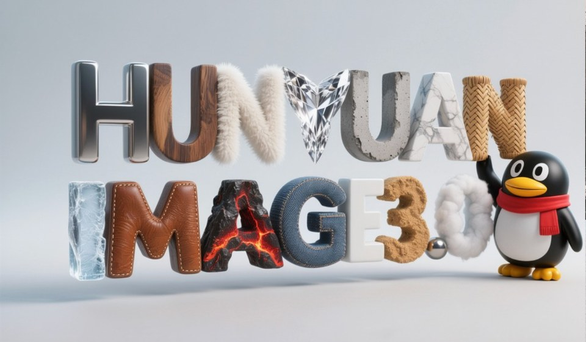
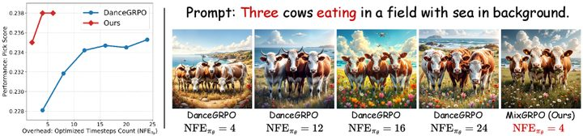
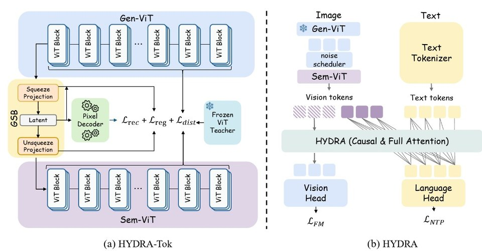
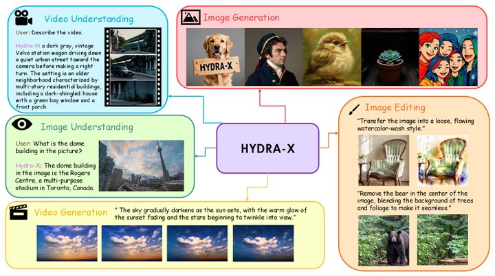
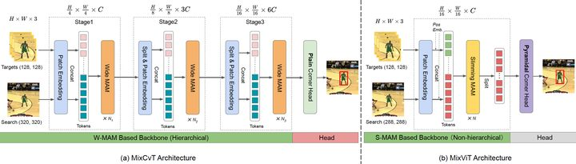
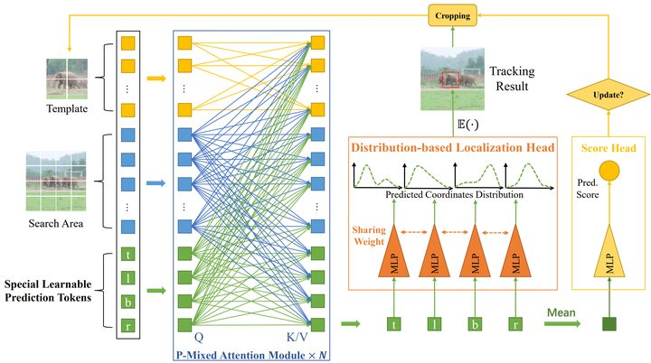
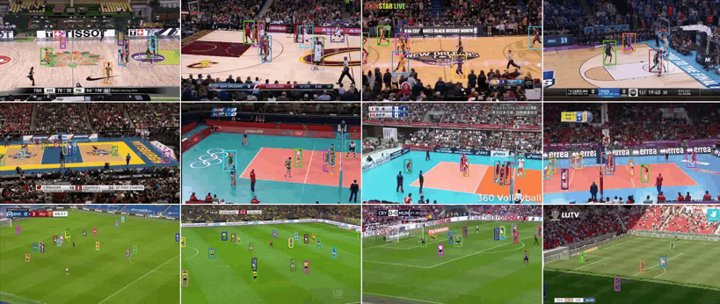

HunyuanImage 3.0 Technical Report
An industrial-scale native multi-modal model for high-quality image generation.
I am a Senior Researcher at Tencent Hunyuan. My work focuses on the pre-training and post-training of multi-modal foundation models, spanning image, video, and audio generation as well as native unified multi-modal architectures.
As a core contributor, I have been involved in the development and release of HunyuanImage 3.0, HunyuanVideo, and related multi-modal systems. I also lead the projects of MixGRPO and the HYDRA / HYDRA-X series.
I received my Ph.D. in Computer Science and Technology from Nanjing University in 2024, advised by Prof. Limin Wang.
* indicates equal contribution. Full list on Google Scholar.

HunyuanImage 3.0 Technical Report
An industrial-scale native multi-modal model for high-quality image generation.
HunyuanVideo: A Systematic Framework for Large Video Generative Models
A systematic framework for large-scale video generation from Tencent Hunyuan.
HunyuanVideo-Foley: Multimodal Diffusion with Representation Alignment for High-Fidelity Foley Audio Generation
High-fidelity video-to-audio generation with multimodal diffusion and representation alignment.

MixGRPO: Unlocking Flow-based GRPO Efficiency with Mixed ODE-SDE
An efficient RL method that mixes ODE/SDE sampling to accelerate flow-based preference alignment.

HYDRA: Unifying Multi-modal Generation and Understanding via Representation-Harmonized Tokenization
A unified multi-modal architecture that harmonizes representations for joint generation and understanding.

HYDRA-X: Native Unified Multimodal Models with Holistic Visual Tokenizers
Native unified multimodal models with holistic visual tokenizers for both images and videos.

MixFormer: End-to-End Tracking with Iterative Mixed Attention
An end-to-end transformer tracker with iterative mixed attention for joint feature extraction and target integration.
StableDrag: Stable Dragging for Point-based Image Editing
A stable point-based image editing method that improves dragging control and visual consistency.

MixFormerV2: Efficient Fully Transformer Tracking
A fully transformer tracker designed for high efficiency and real-time deployment.

SportsMOT: A Large Multi-Object Tracking Dataset in Multiple Sports Scenes
A large multi-object tracking dataset and benchmark focused on challenging sports scenes.
MixFormer: End-to-End Tracking with Iterative Mixed Attention
Fully Convolutional Online Tracking
Target Transformed Regression for Accurate Tracking